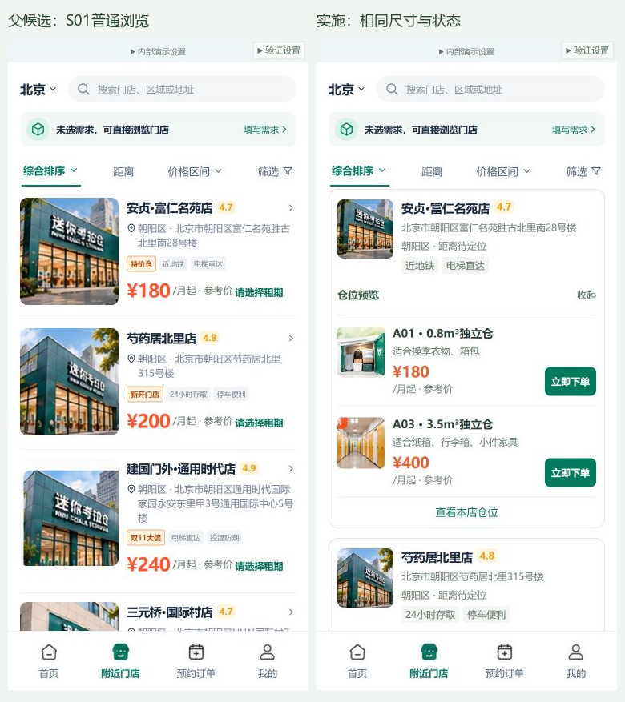
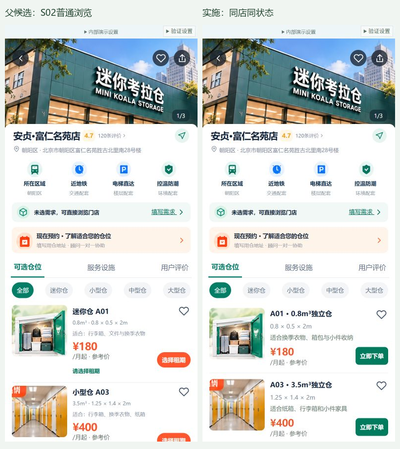
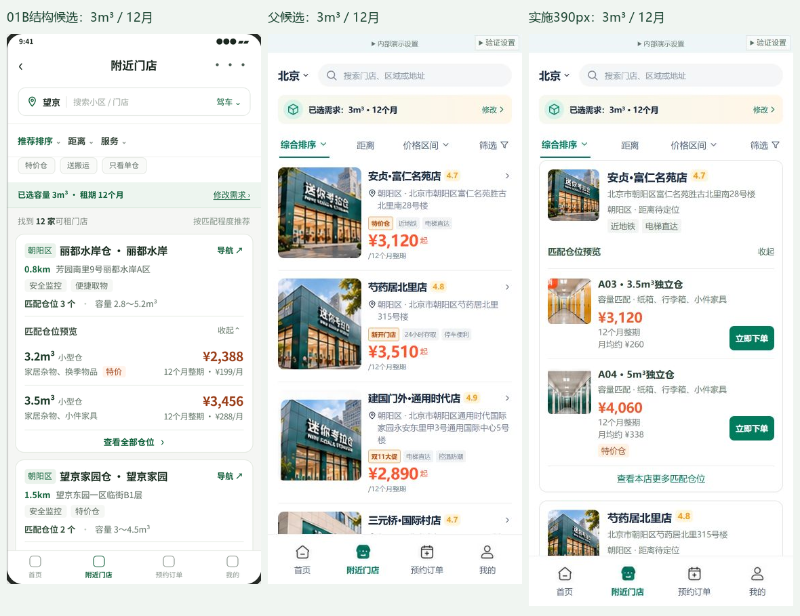

本地候选 · 待视觉签收 · 未合并门店与仓位预览评审
本次完成门店独立展开、绿色立即下单、仓位促销与适用物品文案，沿用上一批手机号验证。
建议核对这五件事
- 列表前两家默认展开，每店最多两个仓位；展开第三家后，第一家仍可保留。
- 在顶部“内部演示设置”中选择“正常匹配”，按验证流程继续；前两家四个仓位分别覆盖无活动、仅特价、仅少量库存、两者同时。
- 第2家 A04 在6个月下整期 ¥2,600。核对列表、详情、下单页是否一致。
- 不选租期不能直接下单；不足容量不能静默替你改小需求。返回门店列表保留展开状态。
- 选择“无匹配”和“售罄”场景，查看其他可租容量及其他门店的下一步。
店名地址参照已接收门店表；北京30店、120仓位为受控本地样本。两条活动及库存组用于验证显示逻辑，不代表实时运营数据。服务不会发送短信或建立真实订单。
验证与来源
111组模型、24个脚本语法、两种手机尺寸共42项浏览器检查通过。375×812、390×844的实际截图已归档，仍需你的最终视觉验收。
查看S01：父候选与本次实现（375，同一浏览状态）

查看S02：父候选与本次实现（390，同店同状态）

查看结构来源与后续实现（宽度已分别标注）

目前到哪一步
本批实现与局部复查完成。尚未合并中央分支，原四分支保持独立；真实微信、短信、库存、支付尚未接入。Release Gate HOLD。
原4240预览保留；本批4260是单独目录。旧版清单仅用于对应历史快照，本批请以BR03_PROMO_COPY_01_MANIFEST为准。